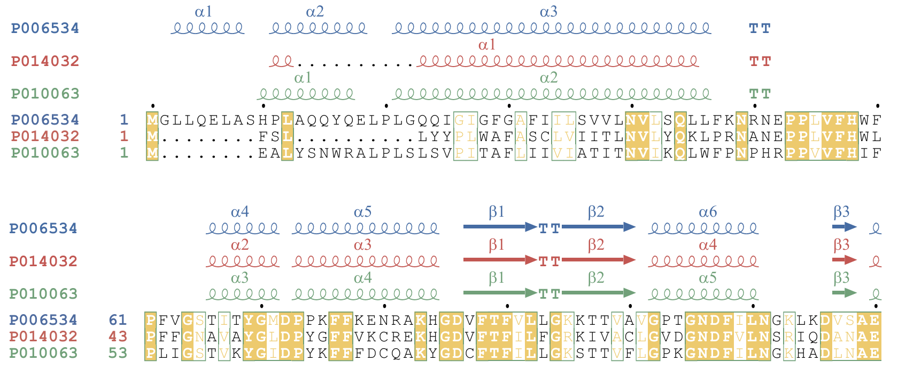
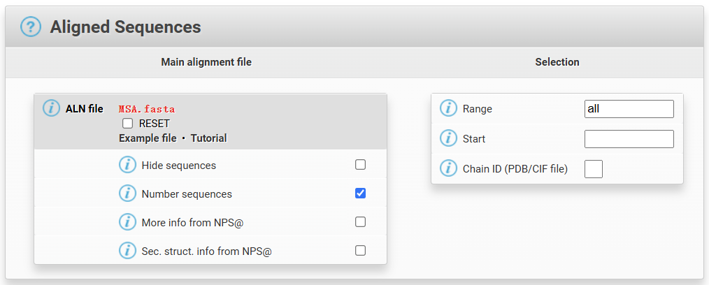
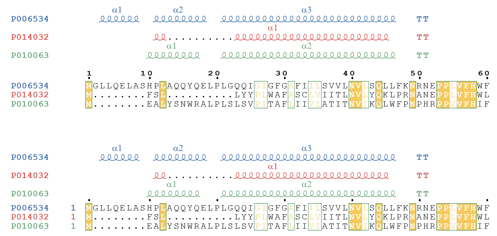
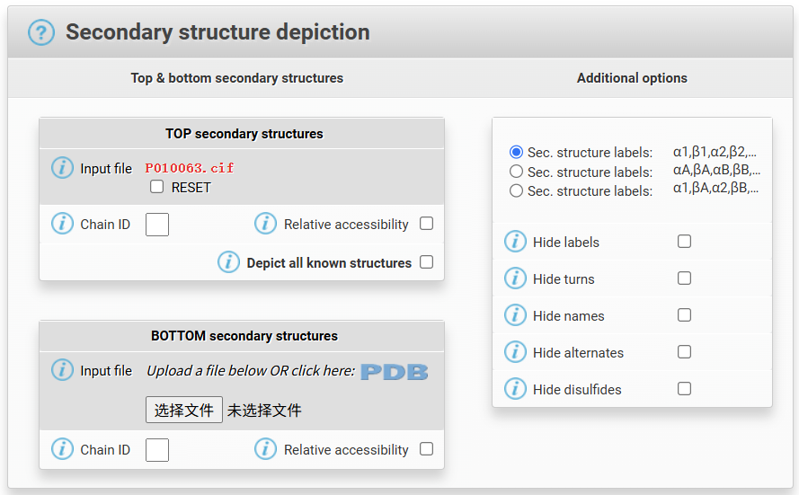
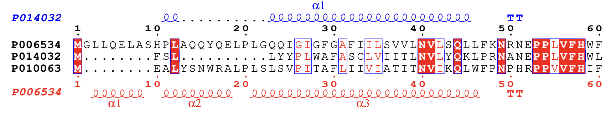
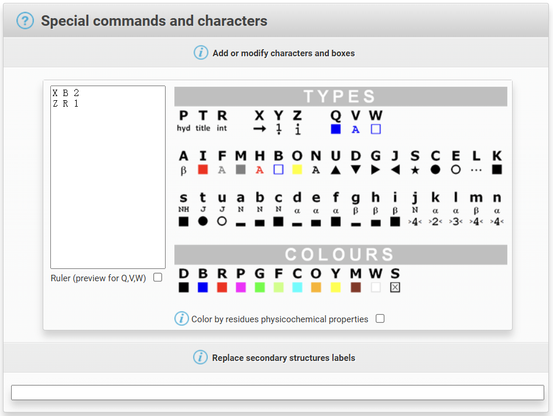
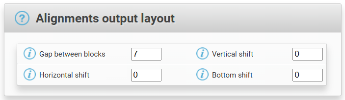

前言
ESPrint3 是一款基于 Web 的多序列比对结果绘图工具，我们只需要输入对比后的 .fasta 文件，经过调整，就可以绘制出不错的图片。但是我用的时候被不断地报错折腾的死去活来，且绘图用法单一，我就想将操作流程放到这里，在这里我们会记录最常用的 MSA 结果 + 二级比对结果图，就像下面：

我们可以通过这个网址进入 ESPrint3 的主页：ESPrint3
页面介绍
导航栏
ESPrint3 有三个模式，分别是基础（BEG），进阶（ADV）和专家（EXP），我们可以在 MODE 下进行选择。在后面，我们都在进阶模式下进行绘图。
在进阶模式下，我们就可以绘制多个层级了，我们可以在 LAYERS 下进行增加或者减少，当有多个层级时，它会在下面进行显示：
信息栏
信息栏有如下几个：
- Aligned Sequences：输入比对后文件的地方，输入
.fasta即可。 - Secondary structure depiction：输入二级结构文件的地方，官方推荐输入
.pdb，但是我们也可以输入.cif，网站会自己进行转换的。 - Sequence similarities depiction parameters：控制“长得一样”具体参数的地方。
- Special commands and characters：伪代码控制区，我们只在这里进行颜色绘制的指定。
- Defining groups：定义组，我也不知道干什么的。
- Alignments output layout：控制轨道层级偏移与位置的地方。
我们将在下面详细介绍。
绘图设置
Aligned Sequences

注意！每一个层级都需要输入对应的 .fasta 文件，在一般绘制中，我们只需要将相同的文件上传就可以了，在你提交任务后它们依次绘制，所以我们保留 0 层级的数据就可以了，其它层级的都选择隐藏（Hide sequences）了！
0 层级建议勾选 Number sequences，这样每一条序列的编号是单独现实的，而不是基于输入文件的位置，区别在下面，上方时没有勾选，下面是勾选了的：

Secondary structure depiction

这里上传结构文件（你没有就可以拿 AlphaFold 去跑一个），如果两个都上传，效果如下：

Special commands and characters

这里是负责写伪代码的，我们在这里之写一个关系：当前层级下的二级结构是对应哪条轨道的，例如：该层级的顶端结构文件对应着 .fasta 文件中的第2条序列，则写为 X B 2，其中 X 代表层级下的上端轨道结构数据，B 代表绘制为蓝色，2 代表是上传文件中的第二条序列。
图片中的 Z R 1 代表下端轨道结构数据（Z 表示）画红色，对应数据为第1条序列。
讲真这种超级饱和审美配色有点辣眼睛，建议绘制后在 Adobe illustrator 中重新映射一遍颜色，这样的话，我不建议在结构轨道中选红色，因为这样会和序列中的红色用一个色号，不方便重新映射颜色。
ESPrint3 生成的 PDF 文件可以直接在 Adobe illustrator 中打开哦！
Alignments output layout

我们只需要在意 Vertical shift 参数即可，它控制轨道的上下偏移，建议 0 层级不要进行偏移，其它层级向上偏移，单条二级轨道一般占2个单位，示例图是这么配置的：
layer0 0
layer1 2
layer2 4